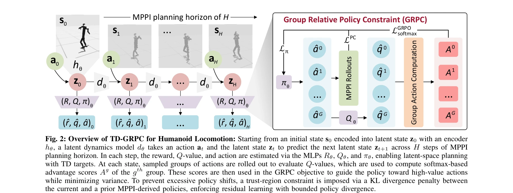
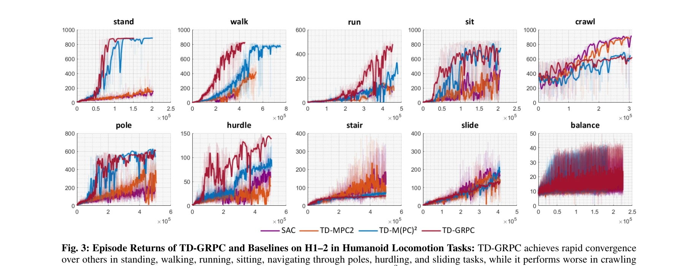

저자: Khang Nguyen, Khai Nguyen, An T. Le, Jan Peters, Manfred Huber, Ngo Anh Vien, Minh Nhat Vu | 날짜: 2025-05-19 | URL: https://arxiv.org/abs/2505.13549

Fig. 2: Overview of TD-GRPC for Humanoid Locomotion: Starting from an initial state s0 encoded into latent state z0 with
본 논문은 Humanoid Locomotion을 위해 TD-MPC 프레임워크에 Group Relative Policy Optimization (GRPO)와 trust-region constraint를 통합한 TD-GRPC를 제안하여, off-policy 학습의 불안정성과 policy mismatch 문제를 해결한다.

Fig. 3: Episode Returns of TD-GRPC and Baselines on H1–2 in Humanoid Locomotion Tasks: TD-GRPC achieves rapid convergenc
Fig. 2: Overview of TD-GRPC for Humanoid Locomotion: Starting from an initial state s0 encoded into latent state z0 with
총평: 본 논문은 GRPO와 trust-region constraint를 통합한 TD-GRPC를 제안하여 humanoid locomotion의 off-policy 학습 안정성을 효과적으로 개선한 의미 있는 연구이나, 실제 로봇 검증과 이론적 분석 심화, 그리고 더 광범위한 task 평가가 필요하다.